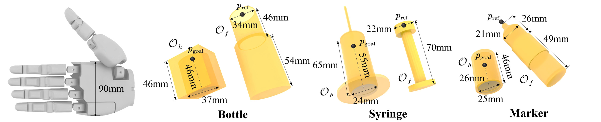
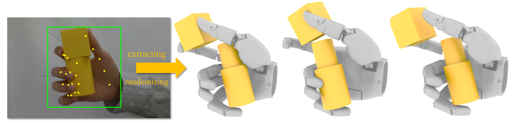
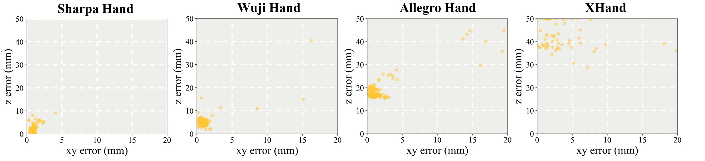

EXPERIMENT 01
Bottle
Align, then insert.
The hand supports the bottle while the thumb and index finger align its cap. Coordinated finger motion brings the two parts together.
This video could not be loaded. Open the video directly
Learning fine finger coordination
A single dexterous hand.
Two interacting objects. Coordinated assembly.
The idea
In-hand assembly asks a single hand to hold, align, and mate two objects. We learn this fine coordination through reinforcement learning in simulation, shaping different fingers into distinct yet cooperative roles.
A hallmark of human dexterity is the cooperative use of fingers, where different fingers take on distinct yet coordinated roles to accomplish fine manipulation, such as capping a pen with the hand that holds it. We study this finger-level coordination through in-hand assembly: mating two rigid objects within a single dexterous hand, with no second arm and no fixture. We present a reinforcement learning formulation to solve this problem in a unified framework, which is driven by a goal relative pose between the two parts. Finger coordination is shaped by a function-based auxiliary reward and regularized toward a single human reference pose, while domain randomization and a fusion of historical proprioception and object observation confer robustness to occlusion-induced estimation noise. The same recipe solves three different assembly tasks (Bottle, Syringe, and Marker). Trained purely in simulation, the policies transfer zero-shot to hardware with a single camera, demonstrating robustness to state-estimation errors caused by occlusion. Our experiments also reveal that in-hand assembly places demands on hand morphology, as a benchmark for modern robotic hand systems.
01 / Real-world experiments
Each task requires a different combination of grasping, alignment, and insertion. All policies are trained in simulation and transferred zero-shot to the real hand.
EXPERIMENT 01
Align, then insert.
The hand supports the bottle while the thumb and index finger align its cap. Coordinated finger motion brings the two parts together.
This video could not be loaded. Open the video directly
EXPERIMENT 02
Every finger has a role.
The fingers stabilize the barrel and guide the plunger. The middle and little fingers help complete the insertion.
This video could not be loaded. Open the video directly
EXPERIMENT 03
Precise motion in a small workspace.
The hand pinches and aligns the cap with the marker, then seats it while supporting both parts within the same hand.
This video could not be loaded. Open the video directly
02 / Closed-loop recovery
Feedback lets the hand respond when an external perturbation changes the objects' relative pose. These experiments show recovery from two kinds of disturbance.
EXPERIMENT 04
Bottle · External perturbation
After an external push disrupts the cap's alignment, the policy uses the index finger to correct its pose and continue assembly.
This video could not be loaded. Open the video directly
EXPERIMENT 05
Syringe · External perturbation
When the plunger is pulled out against the hand's grasp, closed-loop control brings it back to the assembled state.
This video could not be loaded. Open the video directly
03 / Changing orientation
With wrist orientation included in its observations, a policy trained across hand tilts adapts to the changing direction of gravity.
EXPERIMENT 06
Adapting to gravity
A single policy trained across wrist tilts adjusts finger coordination as the hand's orientation changes.
This video could not be loaded. Open the video directly
EXPERIMENT 07
Coordinated insertion across orientations
The syringe policy also operates across different hand tilts, using wrist orientation as an additional observation.
This video could not be loaded. Open the video directly
The demonstrated orientations are successful examples. Certain tilts remain challenging because unstable pinch configurations and differences in simulated contact can prevent assembly.
04 / Method
A shared reinforcement learning formulation connects task geometry, functional finger roles, and observation history.
Each task brings one part to a target pose relative to the other. Position and axis-alignment rewards guide precise alignment and insertion across all three geometries.

The thumb and index finger manipulate one part while the remaining fingers support and adjust the other. Auxiliary rewards encourage these roles, and a single human reference snapshot provides an initial state and a nominal pose prior.

A recurrent policy combines estimated object poses with joint-angle history. Observation randomization during training and a depth-consistency gate during tracking help the system cope with noisy estimates and occlusion.
22-DoF Sharpa Wave Hand · Franka Research 3 · RealSense D435 · FoundationPose
05 / Evaluation
We compare closed-loop control with open-loop replay of successful simulation trajectories, using 20 consecutive real-world trials per task and method.
| Task | Closed-loop (ours) | Open-loop replay | ||
|---|---|---|---|---|
| Alignment | Assembly | Alignment | Assembly | |
| Bottle | 18 / 20 | 15 / 20 | 2 / 20 | 2 / 20 |
| Syringe | 18 / 20 | 17 / 20 | 1 / 20 | 0 / 20 |
| Marker | 16 / 20 | 16 / 20 | 0 / 20 | 0 / 20 |
Alignment: insertion depth greater than 1 cm. Assembly: final insertion depth within 1 cm of the target.
CONTINUOUS TRIALS
Bottle · Syringe · Marker
Follow all 20 trials for each task, shown side by side with the original on-screen counters. The full sequence preserves successes, failures, and resets between attempts.
This video could not be loaded. Open the video directly
The video's final counters are Bottle 14/20, Syringe 19/20, and Marker 16/20. These differ from the paper's results in the table above.
Simulation experiments on the Syringe task show how finger count, joint ranges, and degrees of freedom affect alignment and insertion. The same learning pipeline is evaluated across four robotic hands.

Yellow points are error samples; the paper reports 128 samples. Errors are measured on trials that do not terminate early.
Looking ahead
The current task begins with both objects already in the hand. Some experiments require initial support until the policy establishes contact; picking up and arranging the parts is outside this setting.
Unfavorable initial cap poses, obstructing fingers, and unstable pinch configurations can cause failures. Differences between rigid-body simulation and real soft finger pads remain a challenge.
Extending beyond these three plug-in assemblies to more general geometries, threading, and friction-fit assembly is left for future work.